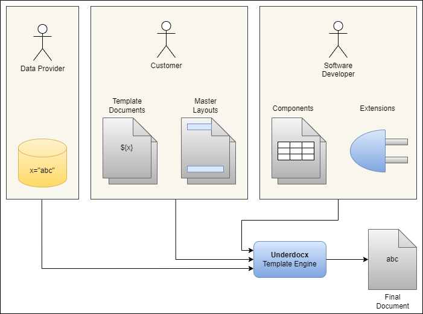
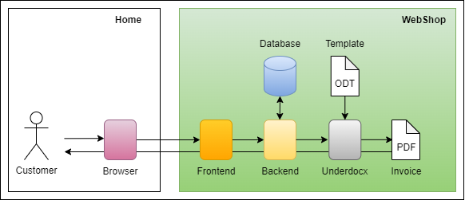
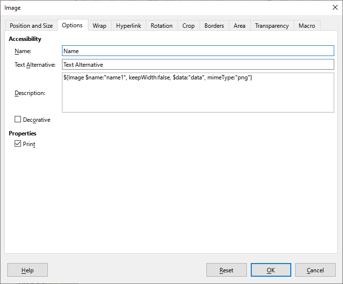

Underdocx User Guide
This Guide will describe what Underdocx exactly is, how this framework can be used in your project, how templates can be defined and how custom data can be provided for document generation.About
Document Template Engine
Underdocx is an extremely extendable open source Java framework to manipulate multiple types of Documents, for example ODT text documents (LibreOffice/OpenOffice Writer), ODG Graphics (LibreOffice/OpenOffice Draw), ODP Presentations (LibreOffice/OpenOffice Impress), ODS Spreadsheets (LibreOffice/OpenOffice Calc) and all plain text files as TXT, HTML, Scripts etc. It uses different types of parameterizable placeholders that will be replaced by custom texts, images, tables and even other documents. This allows you to define "components" that can be easily reused. Underdocx also allows you to define custom placeholders to provide custom functionalities. Also documents can be converted directly to PDF if LibreOffice has been installed on the system.Underdox is a Template Engine or Template Processor. It receives template documents and data and combines it to generate the concrete document. This is a simplified overview that Underdocx does: Templates and data can be combined by a simple programming interface (API), but Underdocx can also be used as standalone command line tool (CLI).
Open Source
Underdocx is free and uses the MIT License.The Source Code is hosted at GitHub.
Releases are provided by Maven Central Repository.
This documentation and more information can be found at Underdocx.org
Getting Started
Add dependency
Add Underdocx as dependency to your project, for example in Maven extend your pom.xml:<dependency>
<groupId>io.github.winterrifier</groupId>
<artifactId>underdocx</artifactId>
<version>0.12.1</version>
</dependency>implementation 'io.github.winterrifier:underdocx:0.12.1'to find more snippets how to include underdocx into your project.
Hello Word Example
Now you can use this code to create a simple template that will be processed by the template engine:public class HelloWorld {
public static void main(String[] args) throws IOException {
OdtContainer doc = new OdtContainer("Hello ${$name}");
OdtEngine engine = new OdtEngine();
engine.pushVariable("name", "World");
engine.run(doc);
File tmpFile = File.createTempFile("Test_", ".odt");
doc.save(tmpFile);
System.out.println("Document created: %s".formatted(tmpFile));
}
}Principles
Technical abstraction
Depending on your software project, multiple teams with different knowledge can be involved when Underdocx is used:- The Template documents could be created by customers without knowledge about software development. Technical details can be hidden behind simple placeholders.
- Additional importable document "fragments" can also be provided and used by the customer or by the software development team that define document fragments as reusable components, similar to components used in web development.
- The data used to fill the templates can be provided by customer, by the software development team or any third party
- Software developers are responsible to use the Underdocx API to combine data and templates
- Software developers can also extend Underdocx with custom placeholders and functionalities to simplify or improve definition of templates

Use Cases
Example Use Case: Reporting
As describe above, Underdocx can be used to create individual software solutions where different roles can apply data and templates through a Web App. This Web App may also allow other users to generate report-documents after selecting data that shall be visualized.Example Use Case: Web Shop
Underdocx might also be used by software developers to simply generate PDF documents based on templates. In this example a Web App has been implemented. Its Backend uses predefined templates to let Underdocx generate invoice-documents that can be downloaded by the user.
Example Use Case: Translatable Graphics
Underdocx might be used as a translation tool, taking a document or graphics with placeholders that shall be replaced by translations or other images. Underdocx also takes the translation data, provided by translation files, and generates the documents or graphics in multiple translated variants.Placeholders
Underdocx uses placeholders to replace them with text or other document components. It provides a predefined placeholder syntax and predefined parameterizable placeholders, so called "commands". The default syntax of placeholders is as follows:${Key}
${Key attr1:value1}
${Key attr1:value1, "attr2":value2}${Date}
${Date value:"2022-01-05", outputFormat:"dd.MM.yyyy"}
${For value:[{firstName: "Hans", lastName:"Müller"}, {firstName: "Jon", lastName:"Doe"}], $as:"person"}Model, Variables and Values
There are three ways how templates can address data that shall be used.- Values are directly provided as placeholder attributes that do not use prefixes characters like '*' and '$'.
- Variables are stored values, added though the engine API but also dynamically created during template processing. The Attribute-Prefix '$' is associated with variables, which means the attribute refers to a variable
- The Model-tree defines a static data structure the engine can walk through. This data type is optional. The Attribute-Prefix '*' is associated with the model, which means the attribute points to a node of the model-data-tree
Values
Values are placeholder attribute values that are directly defined and used by the placeholder itself, for example this document content:Example: ${Date value:"2022-01-05" outputFormat:"dd.MM.yyyy"}Example: 05.01.2022Variables
A simple way to import data to the template engine are the definition of variables that can be accessed by the placeholders. Usually the attribute prefix '$' indicates access to a variable. For example, the given text:Example: ${Date $value:"dateToShow" outputFormat:"dd.MM.yyyy"}String lastYear = LocalDate.now().minusYear(1)
.format(DateTimeFormatter.ofPattern("yyyy-MM-dd"));
engine.pushVariable("dateToShow", lastYear);Example: 19.01.2024Variable referencing Variable
In some cases it might be useful that a variable stores the name/address of an other variable. This variable reference can be resolved with prefix '$$'. The following example stores the value "Hello World" in variable "out", and Variable "reference" stores the variable name "out". The prefix '$$' is used to resolve "reference" and to print out "Hello World" directly.${Push key:"out", value:"Hello World"}
${Push key:"reference", value:"out"}
${String $$value:"reference"}Model
The model is a static hierarchical data structure the template engine can navigate through during template processing. It has one unnamed root node, therefore it is not possible to register multiple models. Existing tree nodes won't usually change their value. The Template Engine always has a current position within the model tree that may change during template processing (for example in for-loops). References to model nodes are always relatively to the engines current model tree position. The usage of models is optional, you might also use variables. This example shows how to register a model and how to address a node:Example: ${Date *value:"persons[1].birthday" outputFormat:"dd.MM.yyyy"}DataNode model = new MapDataNode("""
{
persons: [
{birthday: "1975-05-14"},
{birthday: "2021-03-07"}
]
}
""");
engine.setModel(model);Example: 07.03.2021DataPath-Syntax
Variables and models can store hierarchical data. The DataPath-Syntax can be used to address certain (sub-)nodes in the tree, or even to address parent nodes. There is an overview of characters that have a special meaning:| Character | Description | Example | Explanation |
|---|---|---|---|
| . | introduces the next hierarchy level | a.b | access to the value "b" which is a child node of "a" |
| [ ] | selects an item of a list | access to the second item of a list named "persons" | |
| ^ | selects the root node | access to node "b" which is child of node "a". Node "x" will be ignored | |
| < | selects the parent node | access to node "d" which is child of "b" |
API Introduction
Document Types
OdtContainer / OdtEngine
public class Main {
public static void main(String[] args) throws IOException {
// creates an empty document
new OdtContainer();
// creates a document with two paragraphs "Hello World" and "How are you?"
new OdtContainer("Hello World\nHow are you?");
// loads an ODT file
new OdtContainer(new File("file.odt"));
}
}public class Main {
public static void main(String[] args) throws IOException {
OdtContainer doc = new OdtContainer("Hello ${$name}");
OdtEngine engine = new OdtEngine();
engine.pushVariable("name", "World");
engine.run(doc);
File tmpFile = File.createTempFile("Test_", ".odt");
doc.save(tmpFile);
}
}OdgContainer / OdgEgnine
OdpContainer / OdpEngine
These instances represent are responsible for ODP Presentation documents (LibreOffice Impress). Structure and usage of these classes are quite similar toOdsContainer / OdsEngine
TxtContainer / TxtEngine
Resource
// Creates a Resource instance based on a file
Resource resource = new Resource.FileResource(String file);
// Creates a Resource instance based on a file
Resource resource = new Resource.FileResource(File file);
// Creates a Resource instance based on binary data
Resource resource = new Resource.DataResource(byte[] data);
// Creates a Resource instance based on an URI/URL
Resource resource = new Resource.UriResource(String uri);
// Creates a Resource instance based on an URI/URL
Resource resource = new Resource.UriResource(URI uri);
// Creates a Resource instance based on a Base64 encoded String
Resource resource = new Resource.Base64Resource(String b64Data); DataNode
All type of values (model and variables) are stored as a tree structure that implement the interfaceMapDataNode
Usepublic class Main {
public static void main(String[] args) throws IOException {
DataNode persons = new MapDataNode("""{
persons: [
{name: "Hans"},
{name: "Jenny"}
]}
""");
OdtContainer doc = new OdtContainer("Hello ${$persons[1].name}");
OdtEngine engine = new OdtEngine();
engine.pushVariable("persons", persons);
engine.run(doc);
File tmpFile = File.createTempFile("Test_", ".odt");
doc.save(tmpFile);
}
}DataTreeBuilder
Theprivate DataNode createPersonsData() throws IOException {
Resource resource1 = new Resource.FileResource("image1.png");
Resource resource2 = new Resource.FileResource("image2.png");
DataNode data = DataTreeBuilder
.beginList()
.beginMap()
.add("firstName", "Hans")
.add("lastName", "Müller")
.add("birthDate", "1975-02-01")
.add("imageTitle", "Hans")
.add("imageName", "hans.png")
.addObj("imageResource", resource1)
.end()
.beginMap()
.add("firstName", "Helene")
.add("lastName", "Schäfer")
.add("birthDate", "2009-05-03")
.add("imageTitle", "Helene")
.add("imageName", "helene.png")
.addObj("imageResource", resource2)
.end()
.end()
.build();
return data;
}ReflectionDataNode
private static class TestClassA {
public TestClassB b = new TestClassB();
}
private static class TestClassB {
public List<String> getC() {
return Arrays.asList("Item1", "Item2");
}
}
public static void main (String[] args) {
String content = """
${*b.x}
${*b.c[0]}
""";
OdtContainer doc = new OdtContainer(content);
ReflectionDataNode.Resolver resolver = (object, name) ->
name.equals("x")
? java.util.Optional.of(new LeafDataNode("42"))
: Optional.empty();
OdtEngine engine = new OdtEngine();
engine.setModel(new TestClassA(), resolver);
engine.run(doc);
File tmpFile = File.createTempFile("Test_", ".odt");
doc.save(tmpFile);
}42
Item1
ReferredDataNode
Thisengine.pushVariable("data",
DataTreeBuilder
.beginMap()
.add("name", "data1")
.add("value", "0.1")
.addNode("style", new ReferredDataNode<>(() -> engine.getVariable("green").get()))
.end()
.build()
);Predefined Commands
Underdocx provides multiple predefined placeholders and attributes to enable some basic functions.${String}-Command
The placeholder with keyword String is used to be replaced with text. The text can be taken from a variable, model or directly from attribute. Attribute| Attribute | Type | Description |
|---|---|---|
| value | String or Primitive | Text to be printed. When value-Attribute is missing, current model node will be printed |
| onNull | String of "skip", "fallback", "empty", "deletePlaceholderKeepParagraph", "deletePlaceholderDeleteEmptyParagraph", "deletePlaceholderDeleteParagraph", "keepPlaceholder" | Strategy how to to react on missing data |
| onEmpty | String of "skip", "fallback", "empty", "deletePlaceholderKeepParagraph", "deletePlaceholderDeleteEmptyParagraph", "deletePlaceholderDeleteParagraph", "keepPlaceholder" | Strategy how to react on empty data |
| onError | String of "skip", "fallback", "empty", "deletePlaceholderKeepParagraph", "deletePlaceholderDeleteEmptyParagraph", "deletePlaceholderDeleteParagraph", "keepPlaceholder" | Strategy how to react on invalid data |
| fallback | String | text to use when fallback strategy is applied |
| markup | true / false | text contains markup tags, e.g. <b> for bold |
| rescan | true / false | text may contain placeholder itself to be interpreted |
| templateCell | String | Use this attribute when the command is used within table cell. This attribute contains the address (table name and coordinates) to a cell that is formatted as expected. The template cell might be located in a different (temporary) table. For example templateCell:"TmpTable.D1" |
| Placeholder Example | Expectation | Explanation |
|---|---|---|
|
|
Hello World | Prints out the attribute value |
| ${String $value:"text"} | Variable | Prints value of variable "text" |
| ${$text} | Variable | Prints value of variable "text" (shortcut) |
| ${String *value:"text"} | Model | Prints value of model property "text" |
| ${*text} | Model | Prints value of model property "text" (shortcut) |
| ${*markupText} | <b>bold</b> <i>italic</i> <u>underline</u> <font size="20">large</font> | Prints value of model property "markupText", does not interpret markup elements |
| ${*markupText markup:true} |
|
Prints value of model property "markupText", does not interpret markup elements |
| ${*text onNull:"fallback, fallback:"X"} | Model | Prints the value of model property "text" (which exists) |
| ${*missing onNull:"fallback, fallback:"X"} | X | Prints "X" because model property "missing" does not exist |
| ${String value:"Y", onEmpty:"fallback", fallback:"Z"} | Y | Prints "Y" because attribute is not empty |
| ${String value:" ", onEmpty:"fallback", fallback:"Z"} | Z | Prints "Z" because attribute is empty |
public class Main {
public static void main(String[] args) throws IOException {
OdtContainer doc = new OdtContainer(is);
String modelData = """
{
text: "Model",
markupText: "<b>bold</b> <i>italic</i> <u>underline</u> <font
size="20">large</font>"
}
""";
OdtEngine engine = new OdtEngine();;
engine.pushVariable("text", "Variable");
engine.setModel(new MapDataNode(modelData));
engine.run(doc);
doc.createTmpFile("Test", false, null);
}
}${For}-Command
Placeholder keyword "For" introduces a loops. There are different loop implementations. You can repeat multiple paragraphs, rows of a table or items of a list. Also there are some differences how to receive the iterable data and how to access the current item during iteration. Every| Attribute | Description |
|---|---|
| value | Mandatory, the list of items to walk though. |
| as | makes the current item accessible by this name |
| tableRow | defines which row index or range of rows shall be repeated |
| rowGroupSize | how many rows belong to a single item |
| tableName | you can use the attribute tableName to address the target table |
| parentTable | you can use this attribute to clarify that this loop is inside the table that contains rows to repeat |
| listItem | list item index that shall be repeated |
Loops over model, variables or values
Similar to the String command there is a mandatory| Example | Result | Description |
|---|---|---|
|
${$index} ${EndFor} |
|
The list is defined directly in the value attribute. During iteration, a variable "it" is created that stores the current list item. This item is printed out by command ${$it}. The Variable “index” stores the current item index. |
|
${$index} ${EndFor} |
|
The list is accessed through variable "list". During iteration, a variable "it" is created that stores the current list item. This item is printed out by command ${$it}. The Variable “index” stores the current item index. |
|
${$index} ${EndFor} |
|
The list is accessed through model property "list". During iteration, a variable "it" is created that stores the current list item. This item is printed out by command ${$it}. Also, the current item becomes the current model position aka current model node. The Variable “index” stores the current item index. |
|
${$index} ${EndFor} |
|
The list is accessed through model property "list". During iteration, a prefix "it" is registered that represents the current list item. This item is printed out by command ${*it}. Also, the current item becomes the current model position aka current model node. The Variable “index” stores the current item index. |
|
${$index} ${EndFor} |
|
The list is accessed through model property "list". During iteration the current item becomes the current model position aka current model node. When no "as"-attribute is used, the current model node can be printed with command ${*}. The Variable “index” stores the current item index. |
Loop of Tablerows
To repeat table rows, a template-table has to be placed between theThe example below uses the
Loop of ListItems
To Loop items of a list use attribute| Example | Expectation |
|---|---|
|
]} ${EndFor} |
|
${$index} and ${Counter}-Command
Within loops, the current item index will be stores in Variable${If}-Command
The// condition is true only when variable "v" contains value true
$v:true
// condition is false only when variable "v" contains value true
$v:false
// condition is true only when variable "v" contains string "x"
$v:"x"
// condition is true only when variable "v" contains integer 42
$v:"42
// condition is true only when variable "v" is null or does not exist
$v:null
// condition is true only when variable "v" is an empty list
$v:[]
// condition is true when condition element within { } is false, otherwise true
not:{ ... }
// condition is only true when all comma separated condition elements
//within [ ] are true, otherwise false
and:[ ... ]
// condition is only true when at least one of the comma separated condition
// elements within [ ] is true, otherwise false
or:[ ... ]
// condition is true when variable x is less then y
less:{$x:y}
// condition is true when variable x is greater then y
greater:{$x:y}
// condition is true when variable x is less or equal y
lessOrEqual:{$x:y}
// condition is true when variable x is greater or equal y
greaterOrEqual:{$x:y} ${Push key:"testString", value:"Test"}
${Push key:"testTrue", value:true}
${Push key:"testInt", value:3}
${If $testString:"Test"} VISIBLE ${EndIf}
${If $testString:"xyz"} HIDDEN ${EndIf}
${If $testTrue:true} VISIBLE ${EndIf}
${If $testTrue:false} HIDDEN ${EndIf}
${If not:{$testTrue:false}} VISIBLE ${EndIf}
${If and:[{$testString:"Test"},{$testTrue:true}]}
VISIBLE
${EndIf}
${If and:[{$testString:"Test"},{not:{$testTrue:true}}]}
HIDDEN
${EndIf}
${If or:[{$testString:"Test"},{$testTrue:false}]}
VISIBLE
${EndIf}
${If or:[{$testString:"x"},{$testTrue:false}]}
HIDDEN
${EndIf}
${If less:{$testInt:2}}
VISIBLE
${EndIf}
${If less:{$testInt:3}}
HIDDEN
${EndIf}
${If greater:{$testInt:4}}
VISIBLE
${EndIf}
${If greater:{$testInt:3}}
HIDDEN
${EndIf}${Import}-Command
This command enables creation of reusable document-components that are imported into the main document. Imported document are usual document that also may contain placeholders that will be interpreted after the document has been imported. Note that only the main content of a component will be imported, footer or headers fill be ignored. ${Import} is currently not available for ODS documents.| Attribute | Description |
|---|---|
| uri | Attribute refers to a String that contains an URI to the document |
| data | Attribute refers to a byte-Array that contains the binary data of the document |
| base64 | Attribute refers to a Base64 encoded String that contains the binary data of the document |
| resource | Attribute refers to a Resource-object that represents the document |
| page | Can be used for ODP/ODG templates: select the page name to import. The content of the page will be imported to the page that hold this command. When this attribute is missing all pages are imported. |
| toPage | Optional: for ODG and ODP files select the target page name to import into |
| beginFragmentRegex | For TXT files this optional regular expression marks the start of a text fragment to import. The marked line is excluded |
| endFragmentRegex | For TXT files this optional regular expression marks the end of a text fragment to import. The marked line is excluded |
public class Main {
public static void main(String[] args) throws IOException {
File file = new File("/home/User/doc1.odt");
String content = """
${Import uri:"%s"}
${Import $data:"data"}
${Import $resource:"resource"}
""".formatted("file:///home/User/doc1.odt");
OdtContainer doc = new OdtContainer(content);
OdtEngine engine = new OdtEngine();
byte[] data = Files.readAllBytes(Paths.get(file));
engine.pushLeafVariable("data", data);
Resource resource = new Resource.FileResource(file);
engine.pushLeafVariable("resource", resource);
engine.run(doc);
doc.createTmpFile("Test", false, null);
doc.save(tmpFile);
}
}${Export}-Command
The| Attribute | Description |
|---|---|
| uri | Attribute refers to a String that contains a URI to the document |
| data | Attribute refers to a byte-Array that contains the binary data of the document |
| base64 | Attribute refers to a base64 encoded String that contains the binary data of the document |
| resource | Attribute refers to a Resource-object that represents the document |
| name | Name of the ${ExportTarget} placeholder in the master document that shall receive this document |
${ExportTarget}-Command
The master document may contain a${Image}-Command
This command is a special placeholder, because it is not a plain textual command. Images placeholder are real images that are placed during template creation. An image becomes a placeholder image by adding the
The textual image command provides following attributes
| Attribute | Required | Description |
|---|---|---|
| uri | required if not data, base64 or resource has been used | Attribute refers to a String that contains an URI to the image to use |
| data | required if not resource, base64 or uri has been used | Attribute refers to a byte-Array that contains the binary data of the image |
| base64 | required if not resource, data or uri has been used | Attribute refers to a base64 encoded String that contains the binary data of the image |
| resource | required if not data, base64 or uri has been used | Attribute refers to a Resource-object that represents the image |
| mimeType | required if data or base64 has been used | file extension or MIME type of image |
| name | optional | Name of the image to set |
| keepWidth | optional | when true, replaced image will have same width as this template image and height will be recalculated. When false, replaced image will have same height as this template image and width will be recalculated. When not set the origin size of the image won't change. This property is ignored for shapes |
The image command can also be used to set the background for shapes. Select "Alt Text.." to input the command. The attribute
${CreateImage}-Command
CommandThe following attributes are derived from ODF specification, see OpenDocument V1.3 OASIS Standard. Allowed values and attribute combinations will not be documented here.
| Attribute | Description | Link to Spec |
|---|---|---|
| uri | Location of the image, alternative to resource/base64/data | |
| base64 | Base64 encoded data of the image, alternative to resource/uri/data | |
| data | Binary data of the image, alternative to resource/uri/base64 | |
| resource | Image resource object, alternative to uri/base64/data | |
| mimeType | file extension or MIME type of image, required if data or base64 has been used | |
| unit | Length unit to use for attribute y, x, width, height | |
| name | Image name | draw:name |
| desc | Image desc | svg:desc |
| wrap | specifies how text is displayed around the image | style:wrap |
| anchor | specifies how the image is bound to a text document | text:anchor-type |
| x | specifies a default horizontal position | svg:x |
| y | specifies a default vertical position | svg:y |
| width | specifies a default width (optional when height is set) | svg:width |
| height | specifies a default height (optional when width is set) | svg:height |
| horizontalPos | specifies the horizontal alignment | style:horizontal-pos |
| horizontalRel | specifies the area against which the horizontal position of the image is positioned | style:horizontal-rel |
| verticalPos | specifies the vertical alignment of an image relative to a specific area | style:vertical-pos |
| verticalRel | specifies the area against which the vertical position of the image is positioned | style:vertical-rel |
ABC${CreateImage
$resource:"resource",
anchor:"as-char",
horizontalPos:"from-left",
horizontalRel:"page",
verticalPos:"middle",
verticalRel:"text",
width:12,
unit:"pt",
name:"Image",
desc:"Generated Image"
}DEF${Date}-Command
This command simplifies printing dates. It uses the| Attribute | Description |
|---|---|
| value | date string. If not set, the current date will be used |
| inputFormat | expected date-format of the string addressed by attribute "value". Default format is "yyyy-MM-dd" See Javas DateTimeFormatter about details of the format syntax. |
| outputFormat | preferred date format to display after replacement. Default format is "yyyy-MM-dd" See Javas DateTimeFormatter about details of the format syntax. |
| lang | the language code that might influence the date formatting, e.g. "en-US" or "de-DE" |
| templateCell | Use this attribute when the command is used within table cell. This attribute contains the address (table name and coordinates) to a cell that is formatted as expected. The template cell might be located in a different (temporary) table. For example templateCell:"TmpTable.D1" |
// prints the current date, e.g. 2025-01-25
${Date}
// prints the current date, e.g. 25.01.2025
${Date outputFormat:"dd.MM.yyyy"}
// prints 2024-12-24
${Date value:"2024-12-24"}
// prints 24.12.2024
${Date value:"2024-12-24" outputFormat:"dd.MM.yyyy"}
// prints 2024-12-24
${Date value:"24.12.2024" inputFormat:"dd.MM.yyyy"}
// prints the date stored in variable "date"
${Date $value:"date"}${Time}-Command
This command similar to the| Attribute | Description |
|---|---|
| value | time string. If not set, the current date will be used. Ensure the string also the parsable data for date and time, even when you only want to print out the time |
| inputFormat | expected time-format of the string addressed by attribute "value". Default format is "yyyy-MM-dd HH:mm:ss" See Javas DateTimeFormatter about details of the format syntax. Ensure the string contains data for date and time, even when you only want to print out the time |
| outputFormat | preferred time format to display after replacement. Default format is "yyyy-MM-dd HH:mm:ss" See Javas DateTimeFormatter about details of the format syntax. |
| lang | the language code that might influence the date formatting, e.g. "en-US" or "de-DE" |
| templateCell | Use this attribute when the command is used within table cell. This attribute contains the address (table name and coordinates) to a cell that is formatted as expected. The template cell might be located in a different (temporary) table. For example templateCell:"TmpTable.D1" |
// prints the current time, e.g. 2025-01-25 11:02:45
${Time}
// prints the current time, e.g. 11:02
${Time outputFormat:"HH:mm"}
// prints 2024-12-24 02:03:45
${Time value:"2024-12-24 02:03:45"}${Number}-Command
This command allows you to format number outputs with basic calculations.| Attribute | Description |
|---|---|
| value | the number to display (model node, variable or attribute) |
| format | how to format the number. Default format is "#,###.##". Please read the Java documentation of DecimalFormat for formatting syntax. |
| intFormat | if value is an Integer, use this optional format string instead of "format" |
| lang | the language code that might influence the date formatting, e.g. "en-US" or "de-DE" |
| multiplier | multiplies the value by this factor, e.g. to calculated percentage (0.2 => 20 %) |
| summand | adds this value to the base value, e.g. to calculate row number from index (0 => 1) |
| prefix | adds a string prefix |
| suffix | adds a string suffix, can be used for units, percentage or currency, e.g. 2.30 => 2.30 € |
| templateCell | Use this attribute when the command is used within table cell. This attribute contains the address (table name and coordinates) to a cell that is formatted as expected. The template cell might be located in a different (temporary) table. For example templateCell:"TmpTable.D1" |
| useModified | Use this attribute when the command is used within spreadsheet table cell (ODS). If set to true, the modified value (by multiplier and summand) will be stored as new cell value, Otherwise the origin value will be stored as cell value. For example use useModified:false and multiplier:100 for percentage calculation, use summand:1 and useModified:true to increase current index by 1 |
// prints: 2.00€
${Number value:2, format:"#.00", suffix: "€"}
// prints: 20%
${Number value:0.2, multiplier: 100, suffix: "%"}${Join}-Command
Use this command to combine a list of strings and separate them with a separator. You can also limit the output or set and special separator to use before the last item.| Attribute | Description |
|---|---|
| value | the list of ModeNodes. Ensure each item provides a valid toString implementation |
| separator | optional, sets the separator to use between the items, default value is ", " |
| lastSeparator | optional, sets the last before the last item, default value is value of separator |
| limit | optional, sets the maximum number of items to print, default value is -1, which means no limit |
| truncated | optional, sets suffix text to use when limit value has been exceeded |
// prints: Bibi, Tina, Amadeus, Sabrina
${Join value:["Bibi", "Tina", "Amadeus", "Sabrina"]}
// prints: Bibi, Tina, Amadeus und Sabrina
${Join value:["Bibi", "Tina", "Amadeus", "Sabrina"], lastSeparator:" und "}
// prints: Bibi, Tina usw.
${Join value:["Bibi", "Tina", "Amadeus", "Sabrina"], limit: 2, truncated:" usw."}${Alias}-Command
An alias is a placeholder representing another placeholder and its parameters. It can be used to reduce complexity or to define new default parameters of the replaced placeholder. To support alias placeholders an alias definition has to be registered first. There are two ways to register new alias definitions, the| Attribute | Description |
|---|---|
| key | placeholders that have this key will be replaced with "replaceKey" |
| replaceKey | new key to use when a placeholder with "key" has been found |
| attributes | This attribute is optional and contains an object of the default property key-value-pairs |
| attrReplacements | This attribute is optional and contains an object of key-value-pairs of attribute shortcuts |
// alias definition
${Alias
key: "myDate",
replaceKey: "Date",
attributes: {outputFormat: "dd.MM.yyyy"}
attrReplacements: {
of:"outputFormat",
if:"inputFormat",
v:"value"
}
}
// prints current date similar to 2025-02-25
${Date}
// prints current date similar to 25.02.2025
${myDate}
// prints current date similar to 2025/02/25
${myDate of:"yyyy/MM/dd"}
// prints: 12.12.2024
${myDate v:"2024-12-12"}${Replace}-Command
This command is similar toYou can use this command to replace single short commands by a sequence of other more complex commands
| Attribute | Description |
|---|---|
| key | key of placeholders to replace |
| value | text to use for replacements. Don't forget escape sequences when replacing with other placeholders |
// replacement definition
${Replace
key:"x",
value:"${String value:\"Hallo\"} ${String value:\"Welt\"}"
}
// prints: Hallo Welt
${x}${Remove}-Command
Removes the paragraph, page, text-box or table which contains this placeholder. In ODS, ODG and ODS documents you could use this command to create a temporary area with commands that will be removed in the final document. In this temporary area you can define ${Alias} commands or ${For} statements addressing remote tables. When attribute "name" is used, the table or page that has this name will be removed.| Attribute | Description |
|---|---|
| type | type of element that shall be removed, allowed values are page, table, box and paragraph |
| now | if true, removal will be executed immediately. All following placeholders within the removed element will not be executed. Use now:false to let the template engine remove the element later |
| name | Optional: Remove the table or page that has this name. If not set the parent page, text-box or table will be removed that contains this placeholder |
${Clone}-Command
Clones a page (slide) in ODG/ODP documents or a table in ODS documents.| Attribute | Description |
|---|---|
| name | name of table or page (slide) to clone |
| newName | new name to use for the cloned table or page |
| insertBefore | optional: name of table or page to insert the cloned element before |
${Copy}-Command
Copies the content of a page (slide) in ODG/ODP documents into another| Attribute | Description |
|---|---|
| from | name of table or page (slide) to copy from |
| to | name to target page |
${Create}-Command
Creates a new empty page (ODG, ODP).| Attribute | Description |
|---|---|
| name | name of the new page (slide) to create |
| type | type has to be "page" |
| master | master of the page (slide), default is "Default" |
| insertBefore | optional: name of page to insert the created element before |
${PageStyle}-Command
In ODT document, page breaks, page-orientation-changes and new page numbers can be forced with theOnly page breaks of type "Before" can define/change the page style to use for the next page. And only page breaks with explicit page style can change the page number. You can try it in LibreOffice Write by manually editing the page break: All available page styles can be shown or edited in the styles view (Press F11 and select button "Page Styles"). Here you can also add custom page styles with different header and footers. The
| Attribute | Values | Description |
|---|---|---|
| pageBreakAfter (ODT only) | true/false | if true, a page break is inserted after this paragraph |
| pageBreakBefore (ODT only) | true/false | if true, a page break is inserted before this paragraph (recommended) |
| masterPage (ODT/ODP/ODG) | String | only allowed when pageBreakBefore is true, sets the new page style for the page after the break |
| pageNumber (ODT only)r | Integer | only allowed when masterPage is set, reset the page number for the page after the break |
Command
${Push}-Command / ${Pop}-Command
TheThe
| Attribute | Description |
| key | Name of the variable. You can access another variable or model node to read out the name |
| value | Variable value to store. You can access an other variable or model node to read out the value |
${Calc}-Command
Use this command to add, subtract, multiply and divide two values and store the result as variable. Here are the attributes of the command:| Attribute | Allowed values | Description |
|---|---|---|
| a | Double, Integer or Long | First value to calculate with |
| b | Double, Integer or Long | Second value to calculate with |
| operator | "+", "-", "/", "*" | The calculation method |
| key | String | Name of variable to store the result |
${Push key:"i", value:4}
// prints 6
${Calc key:"x", $a:"i", operator:"+", b:2}${$x}
// prints 8.0
${Calc key:"x", a:2.0, operator:"*", $b:"i"}${$x}${Concat}-Command
You can combine multiple values and add them in a variable as list or as concatenated string| Attribute | Allowed values | Description |
|---|---|---|
| a | Number or String | First value to concatenate |
| b | Number or String | Second value to concatenate |
| c | Number or String | Third value to concatenate |
| d | Number or String | Fourth value to concatenate |
| e | Number or String | Fifth value to concatenate |
| type | "string" or "list" | Store elements as list or combine them in a single string |
| key | String | Variable name to store the result list or string |
${Ignore}-Command
Lets the engine ignore all following commands/placeholders until${Exit}-Command
Stops interpretation of all following placeholders.${Model}-Command
This command is used to test the current model position / current model node. It is internally used by Underdocx to realize For-Loop by copying the content of the loop multiple times and setting the model position before and after every repeat. In case you want to change the model position the| Attribute | Description |
|---|---|
| interpret | set the model position according to the model path relatively to the current position. |
| value | set the model position according to the absolute model path |
| activeModelPathPrefix | registers a prefix that has to be used in model paths (see *as in for-loops) |
Placeholder Styles
You can change the syntax style of placeholders by implementing your own style or by using predefined styles. Changing the placeholder style might help you to edit (text) templates. The TxtEngine can useXML-Comment Style
Use the XML-Comment style to hide the commands in XML comments.<html><body>
<ul>
<!--${For value:["Hans", "Otto", "Gerda"], $as:"item"}-->
<li><!--${$item}--></li>
<!--${EndFor}-->
</ul>
</body></html>Double-Brackets Style
This placeholder style is derived from the mustache-template-engine placeholder syntax.{{Join value:["Bibi", "Tina", "Amadeus", "Sabrina"]}} {{Date value:"2022-02-02"}}Code-Comment Style
Use the Code-Comment Style to hide the commands in language-comments as used in Java, TypeScript, C++ etc.public class Test {
/*!For $value:"entries", $as:"item"!*/
/*!$item!*/
/*!EndFor!*/
}Hash-Comment Style
Use the Hash-Comment Style to hide the commands in language-comments as used in Bash or Python#!Join value:["Bibi", "Tina", "Amadeus", "Sabrina"]!# #!Date value:"2022-02-02"!#PDF Generation
You can use Underdocx to convert ODT files into PDF.Class
Underdocx uses an existing installation of LibreOffice to convert a document into PDF. Ensure environment variable
Command Line Interface (CLI)
When Underdocx is fed with the template document and all required data, it can build the final document without use of the API. Unfortunately there is currently no download available for the CLI tool, therefore you need to build the CLI version manuallyBuild Underdocx as CLI Tool
You need "git", "JDK" and "Maven" to build your CLI variant of underdocx. When these tools are installed type these commands:git clone https://github.com/winterrifier/underdocx.git
cd underdocx
mvn clean install -P buildCliUsage of CLI
To call Underdocx by CLI use this syntax:java -jar underdocx-0.12.1-jar-with-dependencies.jar <engineType> <templateFile> <outFile> [dataJsonFile1] [dataJsonFile2] ...java -jar underdocx-0.12.1-jar-with-dependencies.jar ODT template.odt out.odt data.jsonUnderdocx Json format
The optional Json files (last arguments) contains all data the Template Engine requires to fill the template document. It may contain the data model, variables, alias definitions and String replacements. The schema is as follows:{
variables: { key1:value1, key2:value2, ... }, // values may be complex JSON values
model: {...}, // model data tree
stringReplacements:{ key1:repl1, key2:repl2, ... }, // simple placeholder replacements
alias: [
{
key:key1,
replaceKey:replaceKey1,
attributes: {att1:value1, att2:value2, ...},
attrReplacements: {attr1:replaceAttr1, att2:replaceAttr2, ...}
}, ...
]
}Custom Extensions
Underdocx has been designed of extendability. You can change the syntax of placeholders and add custom placeholders and functionalities in different ways.Custom Placeholders
A simple way to add custom placeholders is to add a new custom "key" as command that will be replaced by another more complex command. This allows you to hide complexity behind simple placeholders. For example, you can import another sub document using theThe engine provides method
The following example creates a custom
String documentStr = """
${Begin}
${$index} ${$element}
${End}
""";
OdtContainer doc = new OdtContainer(documentStr);
OdtEngine engine = new OdtEngine();
engine.registerStringReplacement("Begin" ,
"${For value:[\"A\", \"B\", \"C\"], $as:\"element\"} ");
engine.registerStringReplacement("End" , "${EndFor}");
engine.run(doc);Custom Handlers
CommandHandlers can be written and registered at the engine. They receive detected placeholders and an API to modify the document DOM if they "feel responsible" for the provided placeholder. Usually these CommandHandlers read out the attributes of the placeholder and pass the collected information to a so called Modifier that is responsible to manipulate the internal document DOM.Example: Custom ${Add}-Command
The next example defines a custom CommandHandler hat adds two attributeThis example creates a document that initially contains the
public class AddExample {
private static class AddCommandHandler extends AbstractTextualCommandHandler<OdtContainer, OdfTextDocument> {
protected AddCommandHandler() {
super(new Regex("Add"));
}
@Override
protected CommandHandlerResult tryExecuteTextualCommand() {
int aValue = getAttr(new IntegerDataPicker().expectedAttr("a"));
int bValue = getAttr(new IntegerDataPicker().expectedAttr("b"));
String target = getAttr(new StringConvertDataPicker().expectedAttr("target"));
int result = aValue + bValue;
dataAccess.pushVariable(target, new LeafDataNode<>(result));
new OdfDeletePlaceholderModifier().modify(selection.getNode(), DeletePlaceholderModifierData.DEFAULT);
return CommandHandlerResult.EXECUTED_PROCEED;
}
}
public static void main(String[] args) throws IOException {
String content = """
${Add a:2, b:3, target:"sum"}
${$sum}
""";
OdtContainer doc = new OdtContainer(content);
OdtEngine engine = new OdtEngine();
engine.registerParametersCommandHandler(new AddCommandHandler());
engine.run(doc);
File tmpFile = File.createTempFile("Test_", ".odt");
doc.save(tmpFile);
System.out.println("Document created: %s".formatted(tmpFile));
}
};Custom Syntax
To define custom placeholders with custom syntax, you have to implements theThe example below also defines a custom
The main method of the example creates a document that initially contains text
public class CustomPlaceholderExample {
private static class MyPlaceholdersProvider extends AbstractOdfPlaceholdersProviderFactory<OdtContainer, String, OdfTextDocument> {
private static final Regex regex = new Regex("\\<\\w+\\>");
@Override
public EncapsulatedNodesExtractor getExtractor() {
return new RegexExtractor(regex, getTextNodeInterpreter());
}
@Override
public Codec<String> getCodec() {
return new Codec<>() {
@Override
public String parse(String string) {
if (string.startsWith("<") && string.endsWith(">"))
return string.substring(1, string.length() - 1);
throw new RuntimeException("parse error");
}
@Override
public String getTextContent(String data) {
return "<" + data + ">";
}
};
}
}
private static class UpperCaseCommandHandler implements CommandHandler<OdtContainer, String, OdfTextDocument> {
@Override
public CommandHandlerResult tryExecuteCommand(Selection<OdtContainer, String, OdfTextDocument> selection) {
selection.getPlaceholderToolkit().ifPresent(toolkit -> {
Node placeholderNode = selection.getNode();
String word = toolkit.parsePlaceholder(placeholderNode);
toolkit.replacePlaceholderWithText(placeholderNode, word.toUpperCase());
});
return CommandHandlerResult.EXECUTED_PROCEED;
}
}
public static void main(String[] args) throws IOException {
String content = "Hello <name>";
OdtContainer doc = new OdtContainer(content);
OdtEngine engine = new OdtEngine();
engine.registerCommandHandler(new MyPlaceholdersProvider(), new UpperCaseCommandHandler());
engine.run(doc);
File tmpFile = File.createTempFile("Test_", ".odt");
doc.save(tmpFile); // Expectation: Document containing "Hello NAME"
}
}